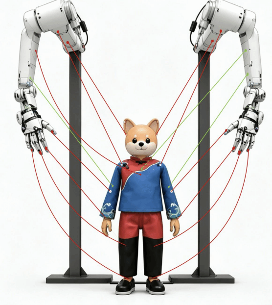
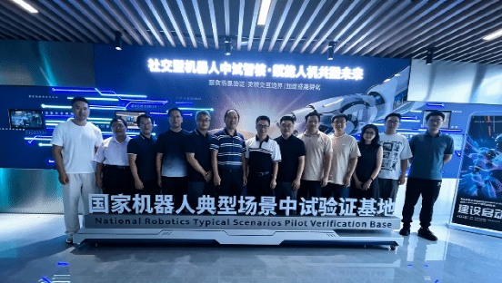

喜报｜我实验室再获2026年度文化和旅游部重点实验室资助项目
实验室申报的“基于灵巧手的提线木偶互动表演系统”项目成功获批，探索机器人灵巧控制、人机交互与非遗表演智能生成。

实验室申报的“基于灵巧手的提线木偶互动表演系统”项目成功获批，探索机器人灵巧控制、人机交互与非遗表演智能生成。

研讨会围绕实验室未来重点攻关方向、跨学科协同与科技赋能闽台非遗保护传承等议题展开深入交流。
闽台非遗文化数字化保护与智能处理文化和旅游部重点实验室于2021年5月由文化和旅游部批准成立。
实验室以闽台区域文化特色为导向，聚焦闽台非物质文化遗产，在数字化保护的基础上，以人工智能应用为技术引领，发挥厦门大学的跨学科交叉优势，开展闽台特色非物质文化遗产的智能处理，为闽台文化传承发展、联合申遗和两岸合作交流提供新的思路。
实验室依托厦门大学建设，固定人员来自信息学院、电影学院、建筑与土木工程学院、人文学院等单位，是一支典型的跨学科交叉团队。
查看旧官网完整介绍聚焦戏曲、音乐、木偶等闽台表演艺术的多模态采集、数字呈现与沉浸式叙事。
建设闽南方言语料资源，研究语音识别、语音合成、大模型与智能交互技术。
开展传统建筑与工艺遗产的数字测绘、精细建模、修复仿真与活化传承。
推动非遗资源数字资产管理、智能内容生成与文化创意产品设计。